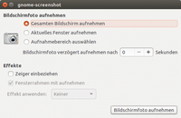
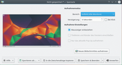
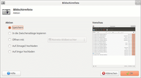
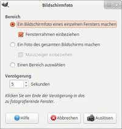

Bildschirmfotos
Hinweis:
Unter Wiki/Bildschirmfotos findet man eine Anleitung, in der erklärt wird, wie man Bildschirmfotos für Wiki-Artikel optisch verbessern kann. Außerdem wird dort erklärt, wie man die Dateigröße auf ein auch für Benutzer mit schmaler Bandbreite erträgliches Niveau bringt.
Zum Verständnis dieses Artikels sind folgende Seiten hilfreich:
Als Bildschirmfoto (Screenshot) bezeichnet man das Abspeichern des Bildschirminhalts in einer Bilddatei. Üblicherweise benutzt man Screenshots zum Dokumentieren von Fehlern bzw. Problemen von Software, für Dokumentationen und Anleitungen - oder einfach nur zum Vorzeigen des hübsch gestalteten Desktops.
Unity¶
Wie im nächsten Abschnitt unter GNOME beschrieben, außer dass das Bildschirmfoto-Werkzeug über die Dash mit dem Begriff "Bildschirmfoto" aufgerufen wird. Falls trotz der Einstellung "Den Fensterrahmen mit aufnehmen" kein Rahmen aufgenommen wird, sollten die Desktop-Effekte von Compiz vorübergehend deaktiviert werden.
GNOME¶
 In der Desktop-Umgebung GNOME lassen sich Bildschirmfotos exakt so erzeugen, wie man es z.B. von Windows gewohnt ist: mit einem Druck auf Druck erstellt man ein Bildschirmfoto des gesamten Bildschirmes, mit Alt + Druck wird das gerade aktive Fenster abgelichtet und nach ⇧ + Druck kann mit der Maus ein beliebiger Bereich ausgewählt werden.
Das GNOME Bildschirmfoto-Werkzeug kann bei Ubuntu-Varianten mit einem Anwendungsmenü über "Zubehör -> Bildschirmfoto aufnehmen" aufgerufen werden und bietet weitere Funktionen wie zeitlich verzögerte Aufnahmen - damit können auch aufgeklappte Menüs aufgenommen werden - und Effekte wie Schattenwurf oder einen Rahmen um das Bildschirmfoto. Sobald das Bildschirmfoto geschossen wurde, öffnet sich ein Dialogfenster, mit dem man das Bildschirmfoto abspeichern kann. Das Dateiformat kann dabei über die Endung festgelegt werden.
KDE¶
 Innerhalb der Desktop-Umgebung KDE kann man die Programme Spectacle (16.04) oder KSnapshot (14.04) benutzen, um Bildschirmfotos zu erzeugen. Hier reicht ein Druck auf die Druck und das KDE Bildschirmfoto Programm erscheint. Hier kann festgelegt werde, ob der gesamte Bildschirm oder nur ein Fenster abgelichtet werden soll. Man kann auch zeitlich verzögerte Bildschirmfotos erstellen.
Als leistungsfähigere Alternative mit integriertem Editor steht Kaption  zu Verfügung. Das Programm startet in Echtzeit, integriert sich perfekt in den KDE-Desktop und ist intuitiv zu bedienen. Der integrierte Editor bietet die am meisten benötigten Funktionen mit sinnvoller Farb- und Größenvoreinstellung für die Nachbearbeitung an: Pfeile, Kreise, Nummern, Textfelder, etc.
zu Verfügung. Das Programm startet in Echtzeit, integriert sich perfekt in den KDE-Desktop und ist intuitiv zu bedienen. Der integrierte Editor bietet die am meisten benötigten Funktionen mit sinnvoller Farb- und Größenvoreinstellung für die Nachbearbeitung an: Pfeile, Kreise, Nummern, Textfelder, etc.
Xfce¶
 Um unter Xfce Bildschirmphotos zu erstellen, verwendet man den Xfce4 Screenshooter. Das Programm bietet u.a. ein Panel-Plugin.
LXDE¶
LXDE und neuere Lubuntu-Versionen speichern von Haus aus bei Betätigung der Taste
Druck ein Bildschirmfoto (PNG-Format) im Homeverzeichnis des Benutzers. Verwendet wird dafür standardmäßig das Befehlszeilenwerkzeug scrot. Tastenbelegung und in älteren Lubuntu-Versionen auch der Befehlsaufruf sind in der Konfigurationsdatei ~/.config/openbox/lubuntu-rc.xml festgelegt. In neueren Versionen ist in dieser Konfigurationsdatei lediglich der Befehl lxsession-default screenshot eingetragen und die Auswahl des Werkzeugs erfolgt über den Einstellungsdialog „Einstellungen“ → „Default applications for LXSession“.
Alternativ kann man unter Lubuntu auch das vorinstallierte Programm mtPaint verwenden, insbesondere wenn noch eine Nachbearbeitung (Ausschnitt etc.) vorgesehen ist.
Andere Programme¶

GIMP¶
Möchte man ein Bildschirmfoto eines Programms mit z. B. einem geöffneten Menü machen, so kommt man mit den Bildschirmfoto-Programm von GNOME nicht weiter (KSnapshot von KDE kann es). Sobald man auf Druck drückt, verschwinden die Menüs. Hierzu muss man auf das Bildbearbeitungsprogramm GIMP ausweichen. Dort öffnet man den Import eines Bildschirmfotos unter
"Datei -> Erstellen -> Bildschirmfoto ..."
Wählt für Bildschirmfotos mit offenen Menüs die Option "Ein Foto des gesamten Bildschirms machen" aus und setzt eine kurze Pause. Man startet den Aufnahmevorgang, geht in das gewünschte Programm, öffnet das Menü und wartet ab, bis die Aufnahme ausgelöst wurde.
Das Starten von GIMP für eine so simple Aufgabe wie ein Bildschirmfoto mag überflüssig erscheinen. Wer seine Bilder allerdings noch weiterbearbeiten will, spart so einen Arbeitsschritt. Wem GIMP zu kompliziert ist, kann sich Shutter oder HotShots anschauen.
Shutter¶
Shutter ist ein Werkzeug zur Aufnahme von Bildschirmfotos mit vielen Funktionen, insbesondere zur Nachbearbeitung. Im Gegensatz zu HotShots (siehe unten) auch für die Desktop-Oberfläche Unity geeignet.
HotShots¶
Eine interessante Alternative zu Shutter ist HotShots, dass ebenfalls umfangreiche Funktion zur Nachbearbeitung eines Bildschirmfotos bietet.
Lookit¶
Lookit bietet zwar keine Werkzeuge zur Nachbearbeitung, kann Bilder aber direkt ins Internet hochladen. Das beherrschen allerdings auch Shutter und HotShots.
Gtk vector screenshot¶
Gtk vector screenshot ist ein kleines Spezialprogramm zum Erstellen von Bildschirmfotos (Screenshots). Das Besondere ist, dass das Ergebnis nicht nur pixelbasiert als PNG-Datei, sondern auch als Vektorgrafik im SVG-Format abgespeichert werden kann. Da Vektorgrafiken beliebig skaliert werden können, braucht man sich fast keine Gedanken über die später tatsächlich benötigte Größe zu machen. Zwingende Voraussetzung ist allerdings, dass die Anwendung, deren Fenster fotografiert werden sollen, die Grafikbibliothek GTK+ 3 verwendet.
Terminal¶
 Man kann Bildschirmfotos auch aus einem Terminal [1] heraus erstellen.
Man kann Bildschirmfotos auch aus einem Terminal [1] heraus erstellen.
Screenshot aus einem Terminalprogramm¶
X Window Dump¶
Auch ohne die Installation eines speziellen Programms lassen sich mit xwd Bildschirmfotos innerhalb einer grafischen Desktop-Umgebung erstellen. Das gilt ebenfalls für Anwender, die nur einen Fenstermanager einsetzen. Mehr Details im Artikel X Window Dump.
ImageMagick¶
ImageMagick, eine Zusammenstellung verschiedener Kommandozeilenprogramme zur Bildbearbeitung, bietet mit import ein umfangreiches Programm, um Bildschirmfotos aus einem Terminal heraus zu erstellen. Als Beispiel soll hier der Befehl genannt werden, um den kompletten Desktop aufzunehmen:
import -window root ~/dateiname.png
Ein praktischer Vorteil gegenüber X Window Dump ist, dass man sich die nachträgliche Konvertierung sparen kann, in dem man das gewünschte Bildformat über die Endung der Ausgabedatei festlegt.
Ein Bild eines beliebigen Programmfensters kann man über folgende Vorgehensweise erstellen:
Die Tastenkombination Alt+F2 verwenden
import ~/dateiname.png
eingeben und bestätigen
Gewünschtes Fenster mit der Maus auswählen
Soll auch der Fensterrahmen aufgenommen werden, ergänzt man den Befehl um die Option -frame.
Scrot¶
Scrot ist ein Kommandozeilen-Hardcopy-Werkzeug zur Aufnahme von Bildschirmfotos. Es macht Aufnahmen grafischer Desktops und arbeitet auch mit Fenstermanagern wie Compiz zusammen. Scrot kann den gesamten Bildschirm, einzelne Fenster oder einen rechteckigen Ausschnitt des Desktops aufnehmen. Auch die Aufnahme von mehreren Bildschirmen ist möglich.
Bildschirmfoto einer Konsole¶
Um ein Bildschirmfoto eines virtuellen Terminals zu erstellen (also der Konsolen, die in der Regel über Strg + Alt + F1 bis Strg + Alt + F6 zu erreichen sind), gibt es zwei Möglichkeiten: entweder wird nur Text oder ein echtes Bildschirmfoto erstellt.
Als Text¶
Auch die Konsolen sind "Dateien", die ausgelesen werden können. Diese Gerätedateien finden sich als /dev/vcsX im System wieder wieder, wobei das X gegen die tatsächliche Nummer der Konsole getauscht werden muss. So kann man beispielsweise den Text der via Strg + Alt + F1 erreichbaren ersten Konsole auslesen [1]:
sudo cat /dev/vcs1 > ~/Bildschirmfoto.txt
Um das Ergebnis etwas leserlicher zu machen, verwendet man den folgenden Befehl:
sudo cat /dev/vcs1 | fold -w 80 | sed 's/[ \x0]*$//g' | cat -s > ~/Bildschirmfoto.txt
Dabei fügt fold -w 80 Zeilenumbrüche ein (besitzt die Konsole eine andere Zeilenlänge als 80, muss man den Wert entsprechend ändern), sed 's/[ \x0]*$//g' entfernt Leerzeichen am Zeilenende und cat -s überflüssige Leerzeilen.
Als Bild¶
Soll der Inhalt der Konsole als Grafik gespeichert werden, um zum Beispiel farbigen Text zu dokumentieren, so kann man das folgende Paket installieren [2]:
fbcat (universe)
 mit apturl
mit apturl
Paketliste zum Kopieren:
sudo apt-get install fbcat
sudo aptitude install fbcat
Mit dem folgenden Befehl wird der Inhalt der aktuellen Konsole als .png-Datei gespeichert:
fbgrab ~/Bildschirmfoto.png
Links¶
Taking a screenshot
- Programmübersicht im Arch-Wikivcsadump
- farbigen Inhalt der Konsole als HTML speichernThread im Forum - farbigen Inhalt der Konsole in Text mit ANSI-Escape-Sequenzen umwandeln
- Erstellt mit Inyoka
-
 2004 – 2017 ubuntuusers.de • Einige Rechte vorbehalten
2004 – 2017 ubuntuusers.de • Einige Rechte vorbehalten
Lizenz • Kontakt • Datenschutz • Impressum • Serverstatus -
Serverhousing gespendet von